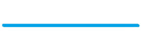

Российская социальная сеть со штаб-квартирой в Санкт-Петербурге. Сайт доступен на 89 языках; особенно популярен среди русскоязычных пользователей. «ВКонтакте» позволяет пользователям отправлять друг другу сообщения, создавать собственные страницы и сообщества, обмениваться изображениями, тегами, аудио- и видеозаписями, играть в браузерные игры. Было замечено, что со стороны ВКонтакте осуществлялись DDoS-атаки на сторонние сайты за счёт ресурсов пользователей сайта. Реализовано это было в виде невидимого iframe, ссылавшегося на страницы целевого сайта. Иногда добавлялся код, перезагружавший iframe через промежутки времени. Ввиду того, что «ВКонтакте» — один из самых посещаемых сайтов в рунете, число запросов на атакуемый сайт становилось равной или многократно превышало число запросов на сам сайт ВКонтакте. Большинство сайтов на такую нагрузку просто не рассчитаны (ввиду экономических соображений), поэтому сайты на время были выведены из строя. В октябре 2008 года был атакован сайт Премии Рунета, а в конце апреля 2012 года DDoS-атака производилась на сайт antigate.com, специализирующийся на расшифровке капчей
Первоначально веб-сайт был назван Thefacebook и был доступен только для студентов Гарвардского университета, затем регистрацию открыли для других университетов Бостона, а затем и для студентов любых учебных учреждений США, имеющих электронный адрес в домене .edu. Начиная с сентября 2006 года сайт доступен для всех пользователей Интернета в возрасте от 13 лет, имеющих адрес электронной почты. Идея Facebook восходит к ранней юности Марка Цукерберга, когда он учился в частной школе Phillips Exeter Academy в Нью-Гэмпшире. В школе ежегодно публиковался справочник с именами, адресами и фотографиями учеников (буквально «книга лиц», «лицевая книга» — Facebook), и когда Цукерберг поступил в Гарвардский университет, то выступил с инициативой создания аналогичного сетевого ресурса, однако администрация учебного заведения отказала ему, сославшись на политику конфиденциальности. Тогда 28 октября 2003 года Марк Цукерберг, будучи студентом-второкурсником, написал код для интернет-сайта Facemash, в котором использовались фотографии людей, размещённые по парам, с целью выбрать, кто из них более привлекателен.
«Тви́ттер» — социальная сеть для публичного обмена сообщениями при помощи веб-интерфейса, SMS, средств мгновенного обмена сообщениями или сторонних программ-клиентов для пользователей интернета любого возраста. История «Твиттера» началась в марте 2006 года как научно-исследовательский проект компании Odeo (Сан-Франциско), первоначально для внутреннего использования. Джек Дорси ввёл понятие индивидуального пользования SMS-сервиса для общения с небольшой группой. Первоначально проект задумывался, как возможность ответить на единственный вопрос: «Что ты сейчас делаешь?». Дорси хотел создать некую платформу, которая позволила бы ему постоянно обмениваться с друзьями короткими сообщениями. Сообщения в «Твиттере» сразу отображаются на странице пользователя и мгновенно могут быть доставлены другим пользователям, которые подписаны на их получение. Оригинальное кодовое название проекта было twttr, навеянное названием знаменитого фотохостинга Flickr и пятисимвольной длиной американских коротких кодов SMS. Работа над проектом началась 21 марта 2006 года в 20:50 по стандартному тихоокеанскому времени (PST), когда Дорси опубликовал первое сообщение «Твиттер»: «just setting up my twttr». Первый прототип «Твиттера» был использован в качестве внутренней службы для сотрудников Odeo, а полная версия была представлена публично 15 июля 2006 года